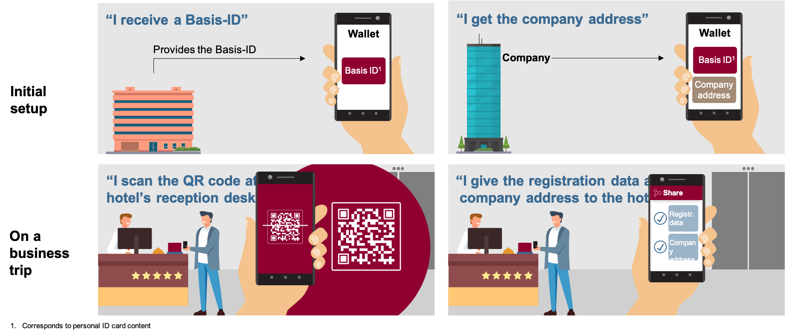
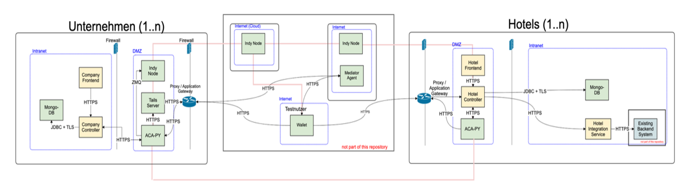

The hotel check-in use case shall enable travelers to digitally check-in to a hotel by presenting two credentials to the hotel. The application covers both the issuing services required to issue the credential to the traveler, as well as the verification application used by hotels to check in the guest.
With this application a company can issue verifiable corporate credentials to their employees that certify that this employee is working for the respective company. Also, hotels (representing the verifier) can request two credentials from a wallet app (not part of this repository) in order to get the data. Based on the data from the two credentials a digital registration form can be created as well as the guest can be checked in.
The overall architecture and the major components of the application within this repository is being shown in the diagram below.
The application consists of the following components:
A backend component responsible for storing and establishing a server to store and retrieve tails files for credential definitions.
A backend component used for handling SSI interactions of a company. The agent issues credentials to the employees of a company.
A database that is used as the persistence layer for the Company Controller.
A backend component that provides a REST interface for Company UI and integrates with the Company Cloudagent. The Company DB is used as the persistence layer for the Company Controller.
A web application that provides functionality for company admins. It allows basic branding by configuring a company name and logo. The web application is implemented using the Angular framework and is served via an NGINX web server
A backend component used for handling SSI interactions of a hotel. The agent requests and handles proofs by hotel guests derived from their credentials.
A database that is used as the persistence layer for the Hotel Controller.
A backend component that provides a REST interface for the Hotel UI and integrates with the Hotel Cloud Agent and the Hotel Integration Service. The Hotel Mongo DB is used as the persistence layer for the Hotel Controller.
A web application that provides functionality for hotel users and admins. It allows basic branding by configuring a company logo. The web application is implemented using the Angular framework and is served via an NGINX web server.
A backend component that provides a REST interface for the Hotel Controller and integrates with existing Property Management Systems (PMS).
In order to enable an end-to-end usage flow, you need to connect to a Hyperledger Indy Network and install a wallet app. Both are not included in this repository.
This application is still under development. All components have been unit and end-to-end tested to the best of our knowledge and belief. However, no specific security tests (e.g. penetration test) or other measures have been conducted.